Written by the coach. Done by you.
PTrainr is a training app for coaches and the people they train. One plan, two sides of it, every set accounted for.
Set 1 of 6
The coach writes it once.
A workout is built from a library of exercises and assigned to one client or several. Every client gets a page: what is coming up, what was done, and each set they logged.


Set 2 of 6
The client ticks it off, one-handed.
Targets arrive filled in, in the coach's blue. A tick logs the set as written; a different number replaces it. Reps and weight, effort out of ten, timed intervals, holds against a countdown: each kind of exercise gets the fields it needs and no others.
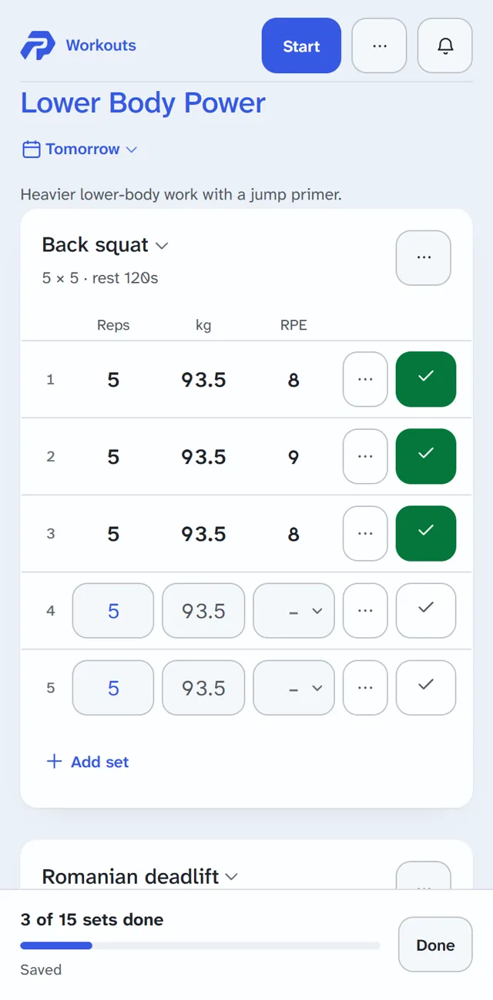
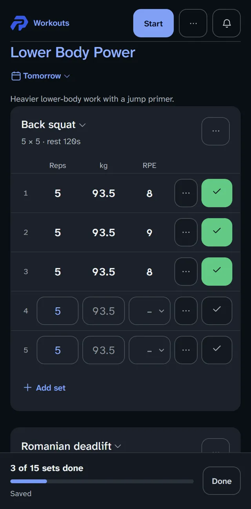

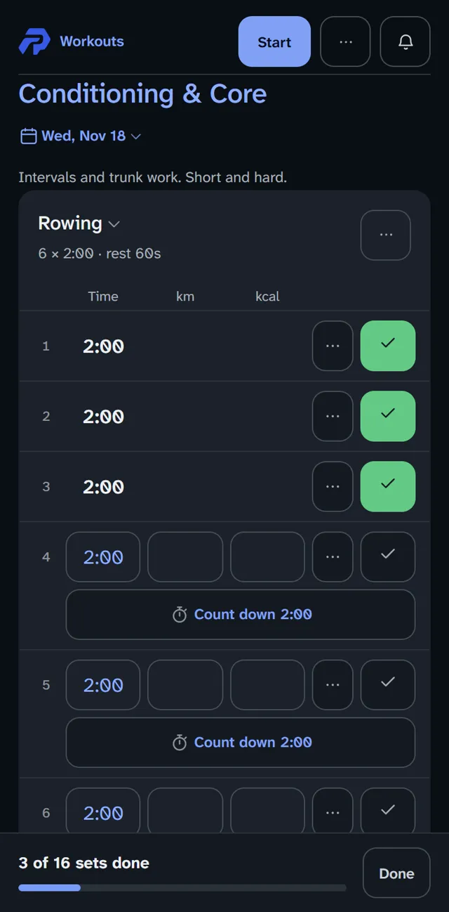
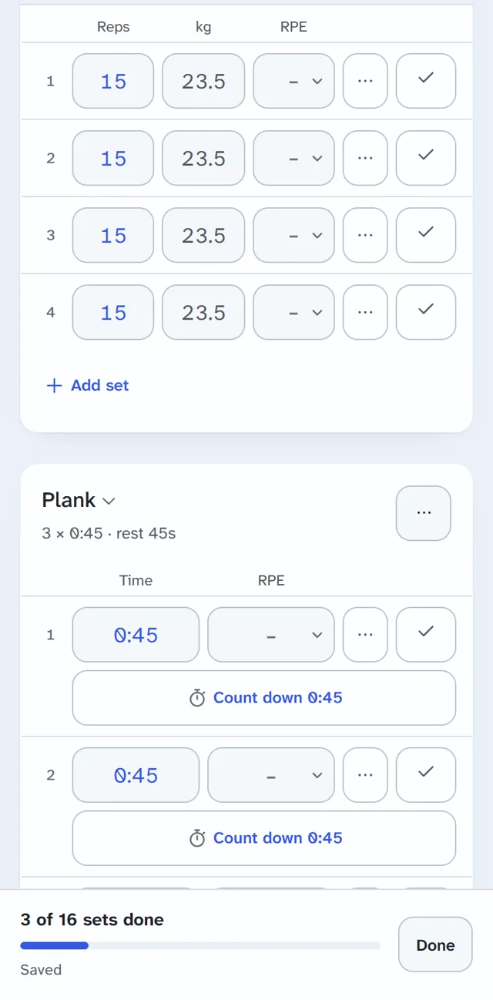
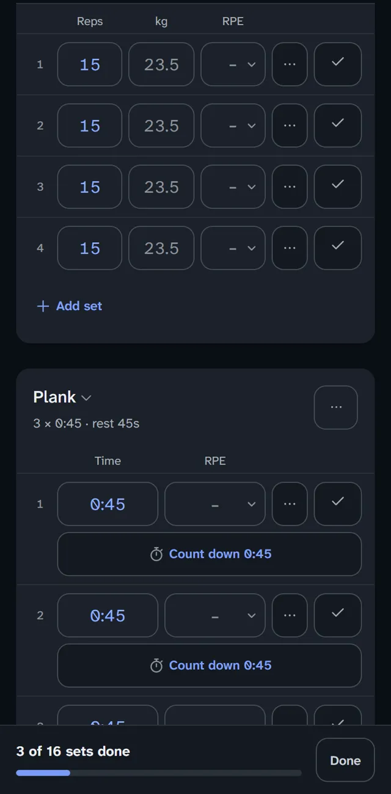
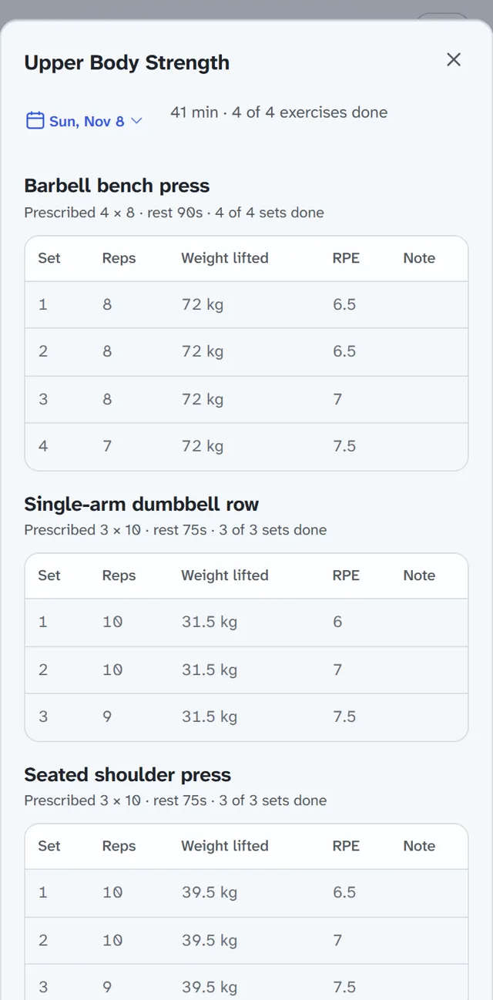
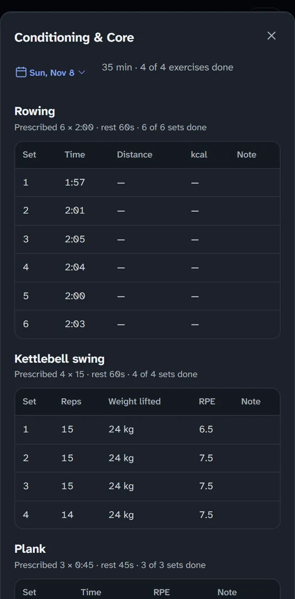
Set 3 of 6
Scan it, and it is logged.
Food goes in by search, by typing what you ate, or by pointing the camera at a barcode. The day's calories, protein and carbs add up above the meals, against the targets a coach can set.


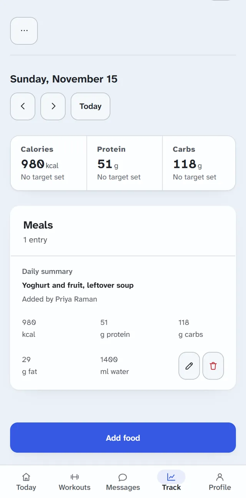
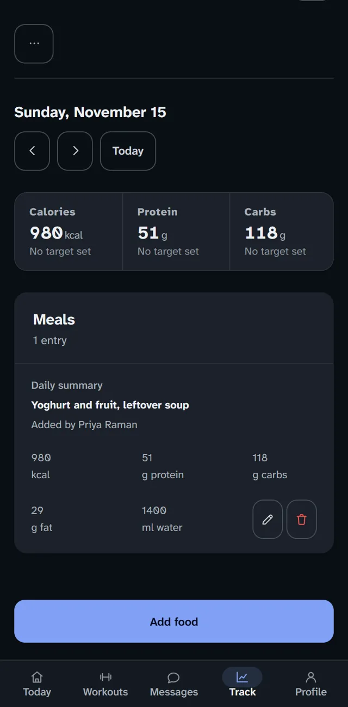
Set 4 of 6
Progress you can see.
Weight, waist, body fat and any measurement a client adds, each charted over time in the unit it was entered in. A reminder can ask for the next one.
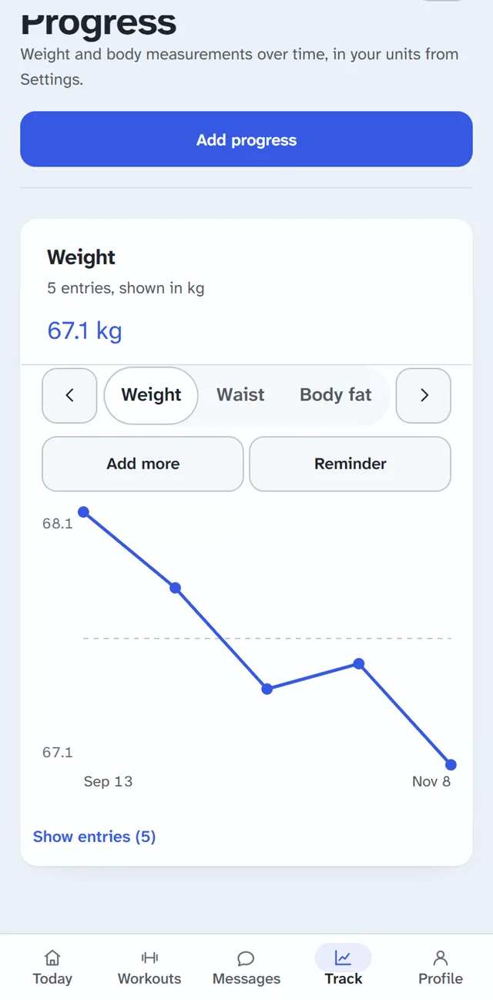
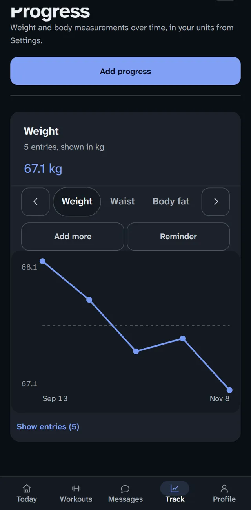
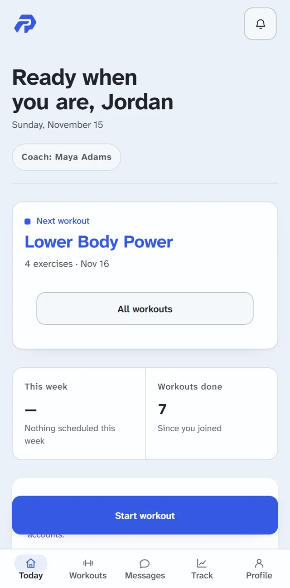

Set 5 of 6
A direct line to your coach.
One conversation between a client and their coach, with photos and PDFs, and nobody else in it. Questions about Thursday's session get answered where the session lives.


Set 6 of 6
The whole month on one page.
Every assigned workout on the day it is due, done ones marked. Subscribe once and the schedule also shows up in Google or Apple Calendar.

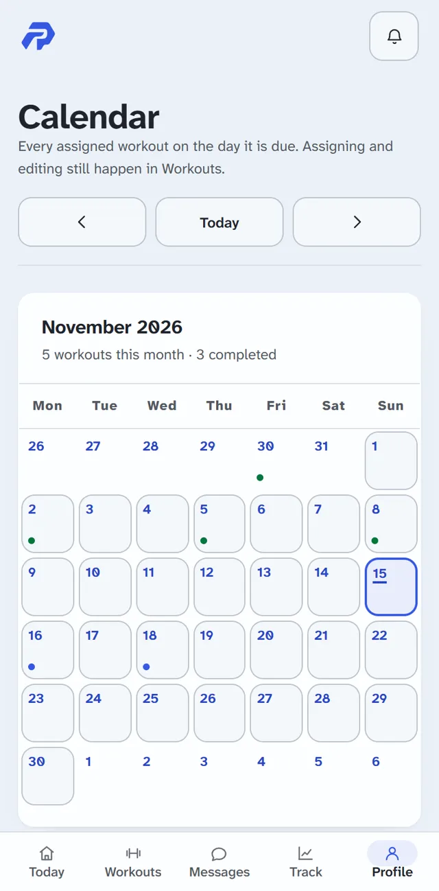
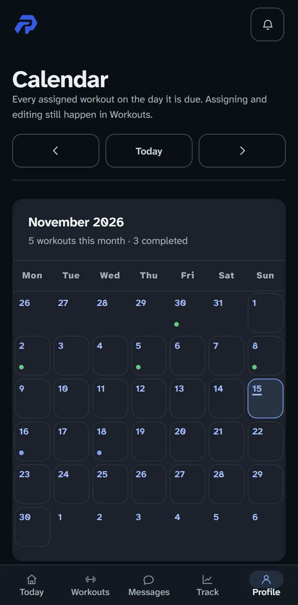
Also in the app
- The same screens everywhere. The website, the Android app and the iOS app match, screen for screen.
- Day, Night and five colours. It follows the phone, or the person.
- 19 languages, two of them right to left.
- Private by default. A coach sees meals and measurements only while the client shares them.
- Works with no signal. Sets and meals logged offline go up when the phone is back online.
- Passkeys and two-factor sign-in.
Built by TC6IDM and Bora, alongside Claude Code. PTrainr is in a private pilot. Every screen on this page is the real app signed in to a demo account: the people and their numbers are invented.